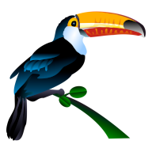

☰
Etiquetas (Tags)
Limpiar Filtro
Gestión de Columnas
+ Añadir Columna
Nueva Tarea
+ Crear Tarea
Backup
📤 Exportar JSON
📥 Importar JSON
⚠️ BORRAR TODO
📖 Ayuda / README
Mi Kanban 1.0
DHB - 2026

Mi Kanban
Gestiona tus proyectos de forma visual y rápida.
(Optimizado para Firefox y Brave)
✕
¿Confirmar?
Cancelar
Borrar
Editar Tarea
Título:
Etiquetas:
Fecha de vencimiento:
Cancelar
Actualizar
Nueva Tarea
Título:
Etiquetas:
Fecha de vencimiento:
Cancelar
+ Crear
Editar Nota
Hn
H1
H2
H3
B
I
Cód
`
List
☐
“
🔗
⊞
—
Cerrar
Guardar
🇦🇷 Español
🇬🇧 English
✕ Cerrar